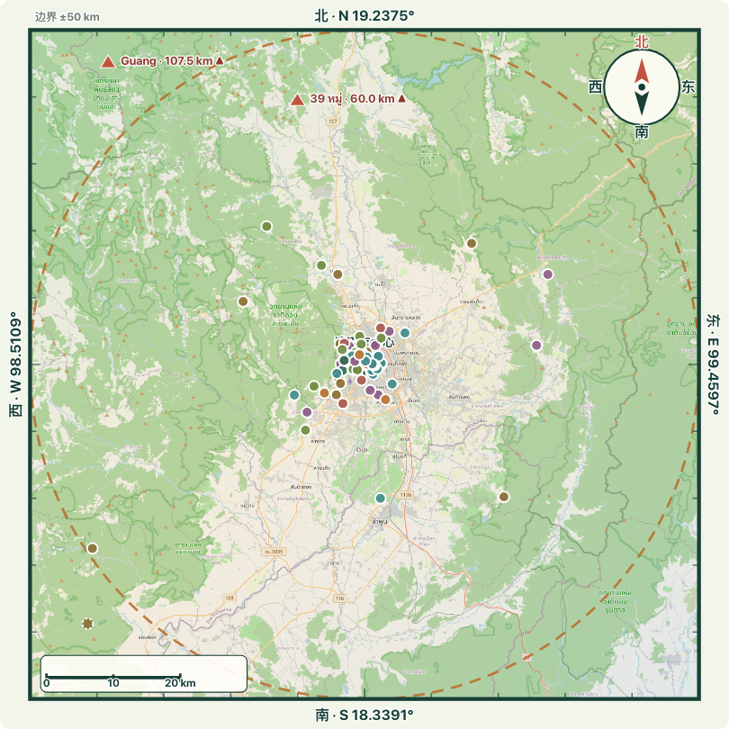

公开只读演示 →
直接体验全文搜索、分类筛选、中英日泰切换、列表与清迈平面地图（50 公里边界、东南西北、真实坐标）。150 个地点、26 个分类，数据来自仓库公开快照。
完整示例网站 ↗
cm.caishen.today — 线上正式版本，含登录、投稿、星级、附近筛选与 MapLibre 交互式清迈平面地图。需要账户。
四语说明文档 ↗
完整阐述痛点、与 Google Maps 的逐项对比、网页版优势、架构与部署方式。
最新：清迈平面地图 · Chiang Mai flat map · チェンマイ平面地図 · แผนที่ระนาบเชียงใหม่
球形地球视图已替换为平面地图，地点落在真实经纬度上；North-up / 正北朝上 / 北が上 / หันเหนือขึ้นด้านบน。

- 多色彩底图：OpenStreetMap 瓦片拼接，道路、平河、素贴山、绿地、公路清晰可辨；本地拼接图作为离线兜底。
- 明确边界：以老城中心 98.9853°E / 18.7883°N 为原点，上下左右各 50 公里（100 × 100 km），四边标出经纬度。
- 东南西北：罗盘、公里比例尺、50 km 虚线半径圆；方位标签随中 / 英 / 日 / 泰切换。
- 真实坐标：137 个地点按真实经纬度落点，取消旧版球形视图的装饰性聚簇偏移。
- 界外标注：3 个超过 50 km 的地点列入侧栏，2 个落在方框外的用 ▲ 标在北边界，信息不丢失。
- English: multi-colour OSM basemap, a 50 km square boundary, compass and scale, true coordinates, and ▲ markers for places beyond the boundary.
- 日本語：カラーの OSM 背景地図、50 km の境界、コンパスと縮尺、実座標、境界外は ▲ で表示します。
- ไทย: แผนที่พื้นหลังสี OSM ขอบสี่เหลี่ยม 50 กม. เข็มทิศ มาตราส่วน พิกัดจริง และ ▲ สำหรับจุดนอกขอบ
简体中文
原本「Google Maps 打图钉 + Notion 写备注」的方式，让地点和说明分家。网页版把 150 个地点结构化，支持全文搜索、分类筛选、四种语言与手机 PWA，还能让朋友共同投稿维护。阅读完整说明 ↗
English
Saved pins were tedious to scan and impossible to search over your own notes, with only one language. The web version adds full-text search, category and distance filters, four-language UI, list view and a flat Chiang Mai map with a 50 km boundary, community contributions and self-owned data. Read the full guide ↗
日本語
Google Maps のピンは探しにくく、自分で書いたメモも検索できず、言語も 1 つだけでした。ウェブ版は全文検索、カテゴリ・距離絞り込み、4 言語、リストとチェンマイ平面地図（50 km の境界）、コミュニティ投稿、データの自前管理を実現します。詳しい説明 ↗
ไทย
หมุดใน Google Maps หายาก ค้นโน้ตที่เขียนเองไม่ได้ และรองรับเพียงภาษาเดียว เว็บเวอร์ชันเพิ่มการค้นหาเต็มข้อความ กรองหมวดหมู่และระยะทาง 4 ภาษา มุมมองรายการและแผนที่ระนาบเชียงใหม่ (ขอบ 50 กม.) การมีส่วนร่วมของชุมชน และการถือข้อมูลเอง อ่านรายละเอียด ↗